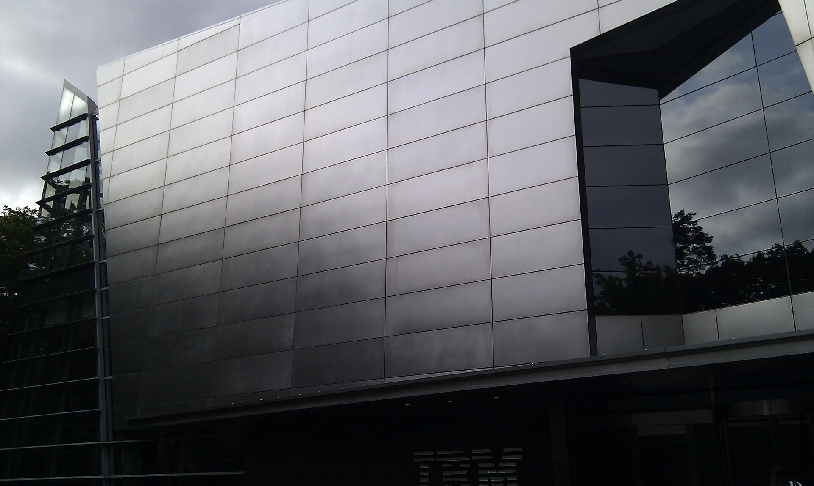

AI 예산이 소프트웨어에서 서버로: IBM 주가 25% 급락이 보여준 것
IBM이 기대에 못 미친 2분기 예비 실적을 공개한 뒤 주가가 하루 만에 약 25% 급락했다. 핵심은 단순한 실적 부진이 아니다. 기업들이 한정된 IT 예산을 서버, 스토리지, 메모리 같은 AI 인프라에 먼저 쓰면서 기존 소프트웨어와 메인프레임 구매가 뒤로 밀릴 수 있다는 경고다.
핵심 요약
AI 투자 확대가 모든 기술 기업의 매출을 함께 끌어올리는 것은 아니다
IBM은 7월 14일 2분기 매출이 172억 달러로 전년보다 1% 늘었다고 잠정 발표했다. 소프트웨어 매출은 5% 증가했지만 인프라 매출은 7% 줄었다. Arvind Krishna 최고경영자는 6월 말 고객들이 공급 부족과 가격 상승에 대비해 서버, 스토리지, 메모리 구매를 우선하면서 다른 거래가 밀렸다고 설명했다.

숫자로 본 충격
| 항목 | 결과 | 읽어야 할 부분 |
|---|---|---|
| 전체 매출 | 172억 달러, 전년 대비 1% 증가 | Reuters가 인용한 LSEG 예상치 178억6천만 달러에 못 미쳤다. |
| 소프트웨어 | 5% 증가 | 성장은 이어졌지만 대형 거래의 마감 지연이 부담이 됐다. |
| 컨설팅 | 보합, 환율 고정 기준 1% 증가 | 생성형 AI 관련 계약 증가만으로 전체 성장률을 크게 끌어올리지는 못했다. |
| 인프라 | 7% 감소 | 메인프레임 Z 사업과 연계 소프트웨어의 부진이 예상보다 컸다. |
| 조정 주당순이익 | 2.93달러 | Reuters가 인용한 시장 예상치 3.02달러보다 낮았다. |
| 주가 | 7월 14일 약 25% 하락 | AI 인프라 투자 붐이 기존 소프트웨어 기업에는 예산 압박이 될 수 있다는 우려가 번졌다. |
왜 AI 뉴스인가
지금까지 AI 투자 확대는 GPU, 데이터센터, 클라우드, 소프트웨어가 함께 성장하는 이야기로 설명되는 경우가 많았다. IBM의 발표는 예산이 무한하지 않다는 현실을 보여준다. 기업이 공급이 부족한 서버와 메모리를 먼저 확보하면, 당장 교체하지 않아도 되는 업무 소프트웨어나 기존 시스템 계약은 다음 분기로 밀릴 수 있다.
Reuters는 IBM뿐 아니라 Microsoft, Salesforce, ServiceNow 등 다른 소프트웨어 종목도 함께 하락했다고 보도했다. 투자자들이 이번 일을 한 회사의 실행 문제만이 아니라 기술 예산의 재배치 신호로 받아들였다는 뜻이다. 다만 IBM은 거래 지연과 메인프레임 사업의 자체 부진, 사이버보안 이슈도 함께 언급했다. 모든 원인을 AI 서버 구매 하나로 돌리는 해석은 지나치다.
서버 선구매와 구조적 예산 이동은 구분해야 한다
Krishna의 설명에는 두 가지 현상이 섞여 있다. 하나는 메모리와 서버 가격이 오르기 전에 고객이 구매를 앞당긴 단기 선구매다. 이 경우 다음 분기에는 하드웨어 구매가 줄고 미뤄진 소프트웨어 계약이 다시 체결될 수 있다. 다른 하나는 AI를 운영할 물리 인프라가 예산에서 지속적으로 더 큰 몫을 차지하는 구조적 변화다.
두 가설을 가르는 지표는 지연된 거래의 실제 마감, 수주잔고, 남은 계약가치와 하반기 소프트웨어 성장률이다. 7월 22일 정식 실적 발표에서 IBM이 어떤 대형 계약이 단순히 다음 분기로 넘어갔는지, 아예 축소되거나 취소됐는지 설명해야 이번 충격의 지속성을 판단할 수 있다.
공급 부족도 모든 하드웨어에 똑같이 적용되지 않는다. 고대역폭 메모리, 기업용 DRAM·스토리지, GPU 서버의 가격과 공급 주기는 다르다. ‘AI 때문에 메모리가 부족하다’는 한 문장으로 설명하기보다 IBM 고객이 실제로 어떤 장비를 왜 앞당겨 샀는지 세부 품목을 봐야 한다.
IBM만의 실행 문제도 분명히 있다
회사는 고객 예산 이동뿐 아니라 여러 대형 거래를 제때 닫지 못했고, 인프라 사업의 성과도 기대보다 약했다고 인정했다. AP가 전한 잠정 매출 172억 달러와 조정 주당순이익 2.93달러는 시장 기대에 못 미쳤다. 주가 급락을 산업 구조만으로 설명하면 IBM의 영업 실행과 제품 주기 문제를 가리게 된다.
메인프레임은 대규모 교체 주기의 영향을 크게 받는다. 신제품 도입이 집중된 시기 뒤에는 비교 기준이 높아지고, 연계 소프트웨어와 서비스 매출도 흔들릴 수 있다. IBM이 ‘소프트웨어 중심의 하이브리드 클라우드·AI 회사’라는 장기 전략을 내세워 온 만큼, 이번 실적은 하드웨어 변동을 소프트웨어 성장으로 완충할 수 있는지 시험했다.
사이버보안 지출이 고객의 의사결정을 늦췄다는 회사 설명도 확인해야 한다. AI 위협 대응에 예산이 이동했다면 보안 소프트웨어에는 기회가 될 수 있지만, 불확실성 때문에 전체 계약 승인이 늦어진 것이라면 영업주기 문제다. 후속 실적에서 보안 관련 수주와 컨설팅 매출이 실제로 늘었는지 봐야 한다.
AI 예산에는 세 번의 청구서가 온다
첫 번째는 인프라다. GPU·서버·메모리·스토리지·네트워크와 데이터센터 전력에 선투자가 들어간다. 두 번째는 모델과 소프트웨어다. API 토큰, 기업용 좌석, 데이터 플랫폼과 보안 도구를 지속적으로 지불해야 한다. 세 번째는 조직 전환이다. 데이터 정리, 시스템 통합, 직원 교육과 업무 재설계 비용이 뒤따른다.
기업이 첫 번째 청구서에 예산을 몰아주면 두 번째와 세 번째가 늦어져 비싼 장비의 가동률이 낮아질 수 있다. 반대로 하드웨어 없이 소프트웨어 구독만 늘리면 처리량과 보안 요구를 감당하지 못한다. 좋은 AI 예산은 이 세 층을 한 프로젝트의 총소유비용으로 계산한다.
소프트웨어 공급자도 가격 모델을 바꿔야 한다. AI 기능을 붙여 좌석 가격을 올리는 것만으로는 고객의 GPU·클라우드 비용과 경쟁한다. 실제 업무 시간, 오류, 인프라 사용량을 얼마나 줄였는지 보여주고 사용량 변동을 예측 가능하게 만들어야 예산을 지킬 수 있다.
기업이 실제로 바꿔야 할 것
AI를 도입하는 기업은 모델 사용료만 계산해서는 안 된다. GPU 서버, 고대역폭 메모리, 스토리지, 네트워크, 보안, 전력까지 함께 예산에 들어간다. 이 비용이 커질수록 기존 SaaS 계약과 시스템 교체 계획을 다시 정리해야 한다. 반대로 소프트웨어 공급자는 AI 기능을 추가했다는 설명만으로는 부족하고, 고객의 인프라 비용까지 포함한 총비용을 얼마나 줄이는지 보여줘야 한다.
구매 시점도 분산할 필요가 있다. 가격 상승 우려만으로 장비를 과도하게 선구매하면 기술 세대 교체와 수요 예측 실패 위험이 커진다. 단계별 용량 확장, 클라우드와 자체 장비의 혼합, 가동률 목표를 계약에 넣으면 공급 부족에 대응하면서도 유휴 자산을 줄일 수 있다.
경영진은 AI 예산을 기존 IT 예산 안에서 서로 빼앗는 항목으로만 보지 말고, 중단하거나 통합할 기존 시스템을 명확히 해야 한다. 새 AI 도구를 추가하면서 오래된 SaaS와 중복 기능을 그대로 유지하면 총비용만 늘어난다. 도입 전후의 업무 성과와 시스템 수를 함께 공개해야 투자 회수 여부를 판단할 수 있다.
한국 독자에게 중요한 이유
한국의 반도체와 메모리 업계에는 서버·메모리 우선 구매가 수요 측면의 기회가 될 수 있다. 그러나 기업용 소프트웨어, SI, 클라우드 기업에는 고객 예산이 하드웨어로 몰리는 부담이 될 수 있다. 같은 AI 투자 확대가 업종별로 정반대 효과를 낼 수 있다는 점이 중요하다.
삼성전자와 SK하이닉스에는 HBM과 서버 메모리 수요의 강도를 보여주는 신호지만, 선구매는 다음 분기 수요를 당겨온 것일 수도 있다. 출하량뿐 아니라 고객 재고, 계약 기간, 일반 메모리 가격을 함께 봐야 한다. 국내 SI·SaaS 업체는 고객의 인프라 예산을 절약해 주는 최적화·운영 도구로 가치를 증명해야 한다.
앞으로 볼 포인트
- IBM이 7월 22일 정식 실적 발표에서 연간 전망과 지연된 대형 계약을 어떻게 설명하는지
- 서버와 메모리의 공급 부족 및 가격 상승 우려가 하반기에도 이어지는지
- 다른 기업용 소프트웨어 회사에서도 비슷한 구매 지연이 나타나는지
- AI 인프라 투자 회수 압박이 소프트웨어 통합과 계약 축소로 이어지는지
내가 보는 핵심
IBM의 25% 급락은 ‘AI가 소프트웨어를 끝냈다’는 판결이 아니다. 약한 잠정 실적, 회사의 실행 실패, 하드웨어 선구매와 구조적인 AI 예산 이동을 시장이 한꺼번에 가격에 반영한 사건이다. 후속 분기에서 지연 계약과 인프라 구매가 정상화되는지 확인해야 한다.
더 큰 교훈은 AI 예산이 기술 업계 전체에 고르게 퍼지지 않는다는 점이다. 병목이 서버와 메모리에 있을 때 돈은 그곳으로 먼저 흐르고, 소프트웨어는 인프라를 실제 생산성으로 바꾼다는 증거를 요구받는다. AI 수혜주라는 이름보다 가치사슬의 어느 청구서를 받는 회사인지 구분해야 한다.
출처
- IBM: Arvind Krishna's Letter to IBM Investors
- AP: IBM shares plunge after preliminary second-quarter results
- Reuters: IBM warns AI boom is squeezing software budgets
- Axios: IBM stock tanks as AI chip spending takes a toll
- Reuters: IBM warns AI boom is squeezing software budgets
- Reuters Breakingviews: IBM struggles to put out its AI spending fire
- Wikimedia Commons: IBM Corporate HQ, Armonk, NY
{kind=link}